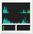
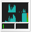
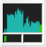

|
wmcpumon dockappAboutThis is a small dockapp, that displays the following information about the system:
Only libxcb (X C-language Bindings library) and the standard C library are as external libraries required. License AGPLv3: GNU Affero General Public License version 3 NewsThu May 20 12:43:04 CEST 2010Version 1.00 released.Documentationdoxygen generated source documentation.Screenshots  DownloadsSource Version 1.00 (GIT-b1c9379)wmcpumon-2010-05-20-12.tar.bz2
Johns johns98 @ gmx . net |